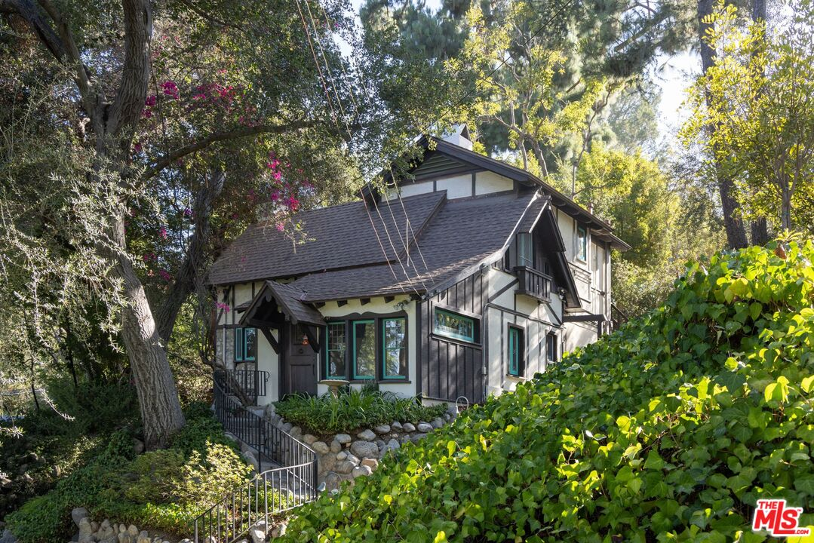
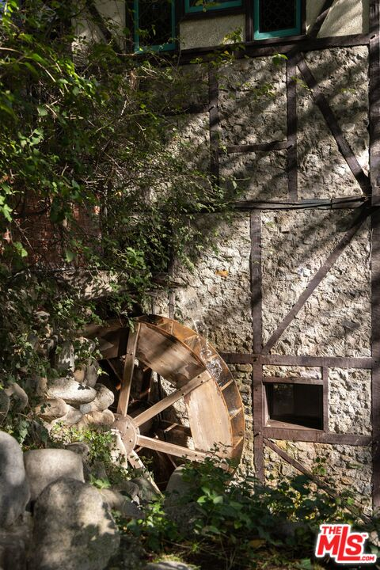
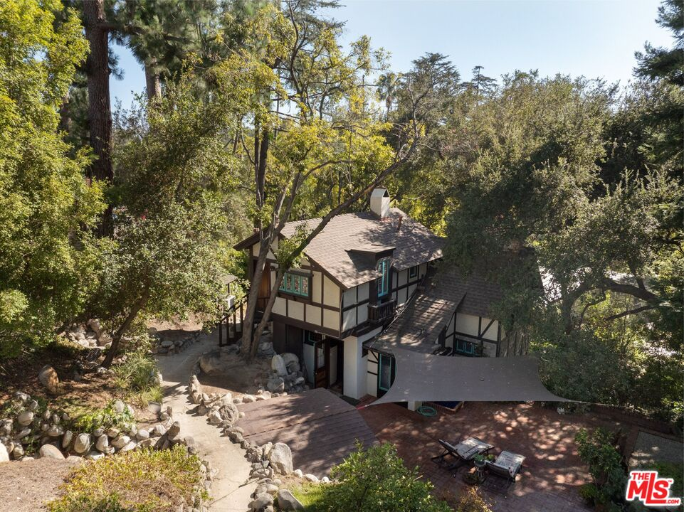

Obsession No. 005
Obsession No. 005Lower Arroyo · Pasadena
485
Madeline Dr
If you want to be a Disney princess in real life, this is the house you buy.
Why it made the edit
“It is the kind of house that makes you stop mid-sentence the moment you walk in.”
This one made the list the second I stepped past the ivy and found a water wheel still turning against the side of the house.
485 Madeline Drive was built in 1910 as the tea house for Busch Gardens, the 32-acre botanical wonderland that once sat on some of Pasadena's most coveted land before it closed in 1937, and this storybook English cottage is the last trace of it still standing.
Leaded stained glass, hand-carved millwork, a two-story lofted basement, gardens that wind past stone steps and a little bridge under the trees.
It is the kind of house that makes you stop mid-sentence the moment you walk in, and that is exactly the feeling I want for whoever ends up living there.
If it's speaking to you the way it spoke to me, I'd love to talk it through.



Want to see it in person?
Curious about this one?
Let’s talk.
Listed by Bryony Atkinson & Abigail Dotson, MAISONRE. House of Zonshine does not represent this listing. Property details are from listing information and public sources and should be independently verified.